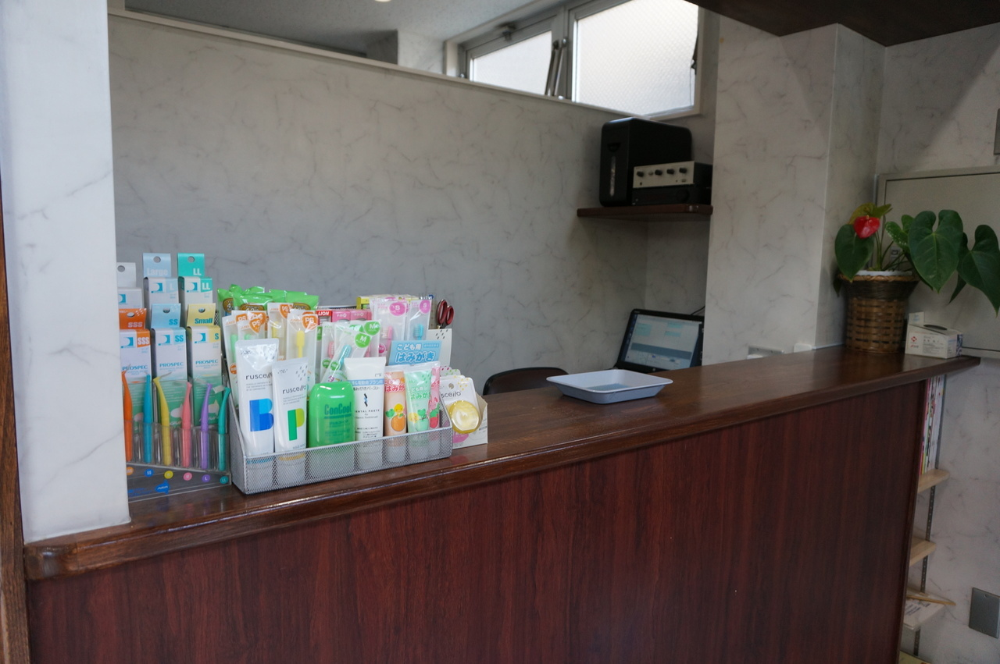
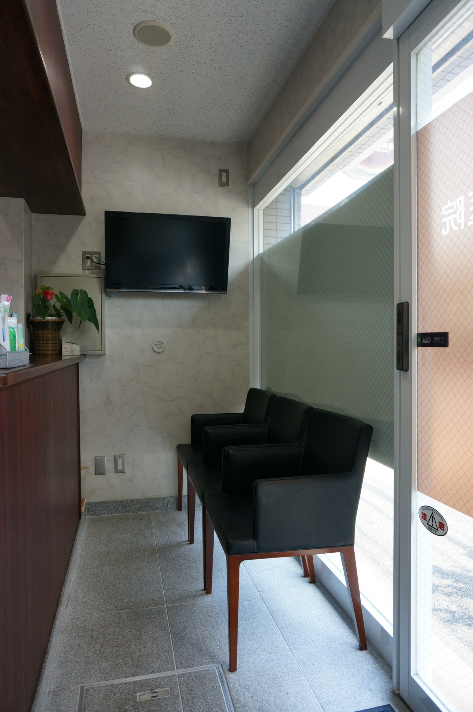
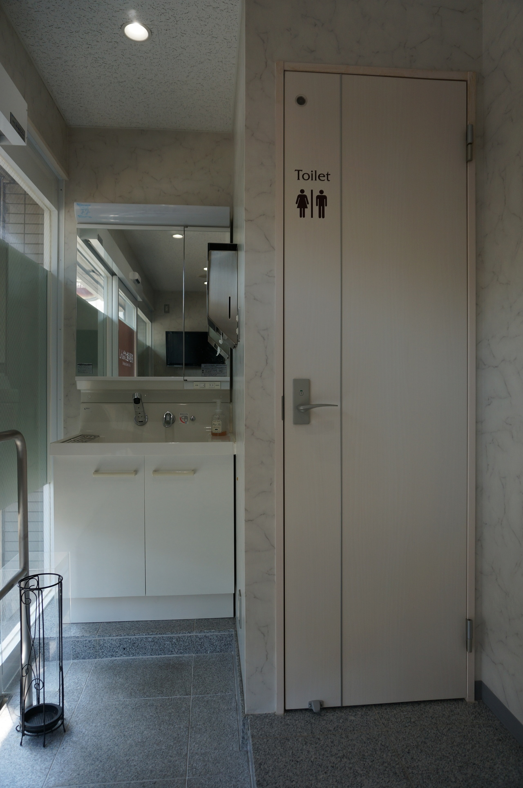
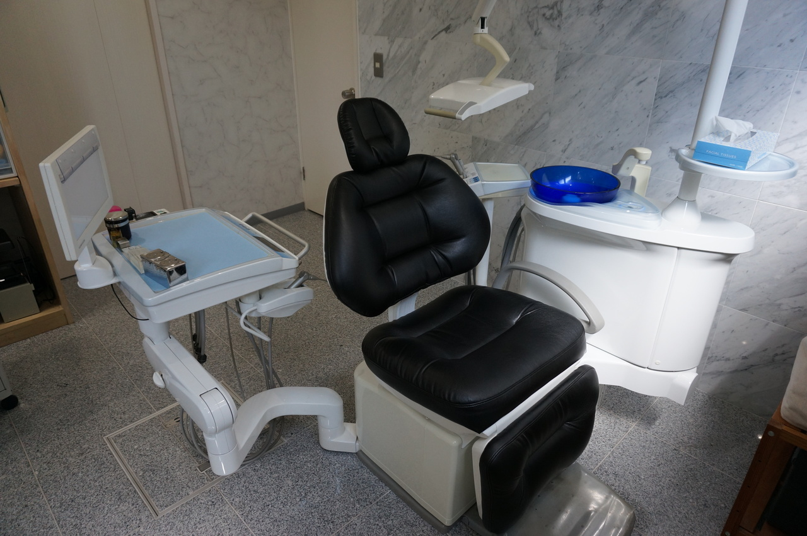
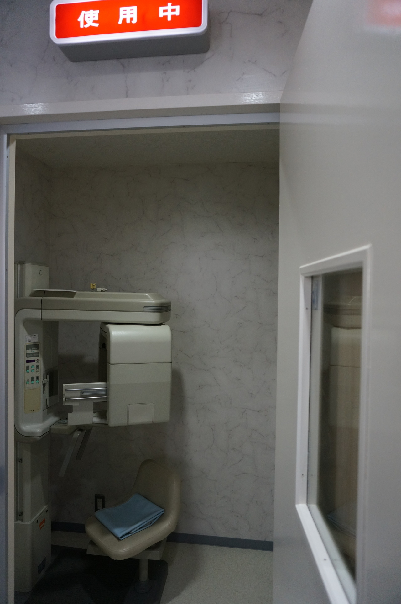
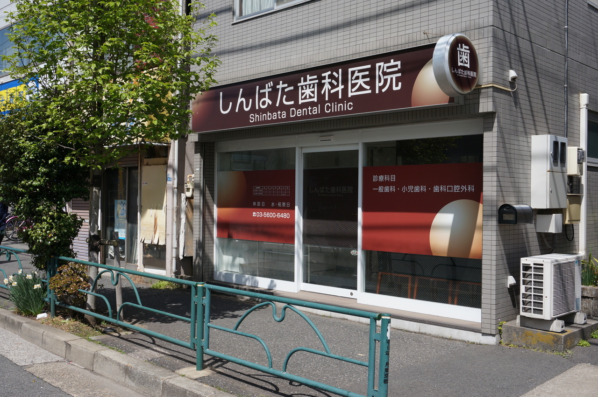
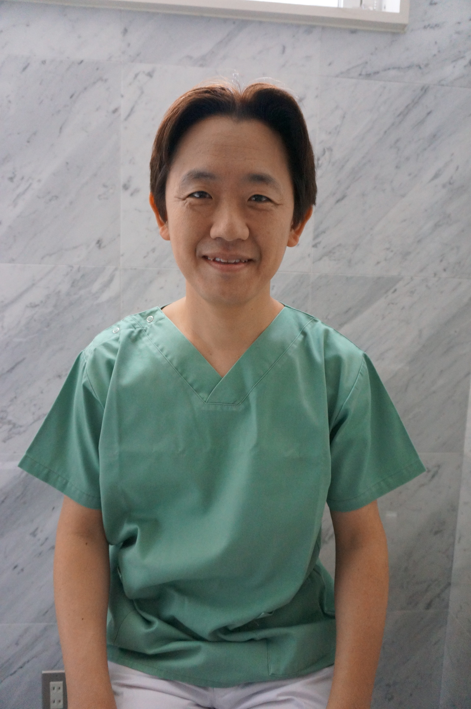

当院の特徴
地域密着の歯医者です
開院から15年、前身のMPGビル歯科医院からでは27年、地域に密着して歯の治療を行なってまいりました。地域の方の健康を歯から守るため、わかりやすい説明と丁寧な治療を心掛けております。
じっくりとお話をお聞きします
患者さん一人一人に対して、十分な時間をとり、不安がなくなるまでご説明いたします。患者さんが不安を抱えたまま、治療を進めるようなことはございませんのでご安心ください。
住吉駅・菊川駅から徒歩5分
当院は住吉駅・菊川駅から徒歩5分の通いやすい歯医者です。20時まで診療を行っておりますので、仕事帰りや学校帰りなど、お気軽にお立ち寄りください。
診療案内
診療科目
- 虫歯（むし歯）の予防
- 虫歯（むし歯）の治療
- 審美歯科治療
- 歯周病の予防
- 歯周病の治療
- よく噛める入れ歯（義歯）
主なサービス：一般歯科、小児歯科、歯科口腔外科
ご予約について
診療は予約制になります。直接、医院にお越し頂いても、長時間お待ちになったり、時間の予約だけということもありますので、事前にお電話していただければと思います。
最終の受付時間は、診療終了時刻の30分前になります。
診療時間
| 診療時間 | 月 | 火 | 水 | 木 | 金 | 土 | 日 |
|---|---|---|---|---|---|---|---|
| 午前 10:00〜13:00 | ○ | ○ | × | ○ | ○ | ○ | ○ |
| 午後 14:30〜20:00 | ○ | ○ | × | ○ | ○ | △ | × |
- 【月・火・木・金】10:00〜13:00 / 14:30〜20:00
- 【土】10:00〜13:00 / 14:30〜17:00（△は17:00まで）
- 【日】10:00〜13:00
- 休診日：水曜・祝日
診療の流れ
1. 来院・受付
予約時間に来院されましたら、受付を行ってください。受付時に、保険証と診察券の提示をお願いします。初めての方は問診票への記入をお願いします。
2. 問診
初診の方は、記入して頂いた問診票をもとに、現在の症状をお伺いします。再診の方は、診療室にて詳しく症状、お悩みをお伺いします。
3. 検査
問診をもとに、必要な検査を選択し行います。主な検査として、お口の中を直接みて行うものと、レントゲン撮影による間接的なものがあります。
4. 治療の説明
検査結果をもとに、現在の症状及び原因をお話し、治療内容を説明いたします。
5. 治療
治療は、説明時にお話しした内容に納得して頂いてから、必ずはじめますので安心して頂けると思います。
6. メインテナンス
当院では、治療後のメインテナンスに力を入れています。治療後、半年及び一年の患者さんにはリコール葉書を送らせてもらっています。
医院のご紹介
しんばた歯科医院は、新大橋通りに面した地下鉄住吉駅、菊川駅から徒歩5分の場所にあります。患者さんの痛みや悩みについて、充分にお話を伺いながら、希望に沿って診療を行っています。






院長ごあいさつ
院長 新畑 宏（しんばた ひろし）
はじめまして。院長の新畑 宏です。この地で、診療を初めて11年になりました。様々な患者さんの診療を通して、技術だけでなく、歯科医師としての姿勢を育てていただきました。これから、新しく来院される患者さん、そしてこれまで通院していただいた患者さんが、いつも美味しく食事ができ、歯の痛みに悩まれないようにお手伝い出来たら幸いです。
経歴
- 2000年3月 昭和大学歯学部卒業
- 2000年4月 日本大学松戸歯学部保存修復科に入局
- 2001年4月 千葉県内歯科医院にて勤務
- 2008年4月 現医院を開業

概要・アクセス
- 名称
- しんばた歯科医院
- 代表者
- 新畑 宏
- 住所
- 〒135-0002 東京都江東区住吉1-17-19 角田ビル1F
- 診療時間
- 【月・火・木・金】10:00〜13:00 / 14:30〜20:00 【土】10:00〜13:00 / 14:30〜17:00 【日】10:00〜13:00
- 休診日
- 水曜・祝日
- サービス
- 一般歯科、小児歯科、歯科口腔外科
- アクセス
- 地下鉄住吉駅・都営地下鉄菊川駅から徒歩5分
- 沿革
- 2006年4月 MPGビル歯科クリニック開業 ／ 2009年4月 ビル名変更に伴い「しんばた歯科医院」に名称変更 ／ 2012年9月 角田ビル1Fに移転
お知らせ
2021/12/28
年末年始休診のお知らせ：12/28(火)午後から1/5(水)までお休みさせていただきます。